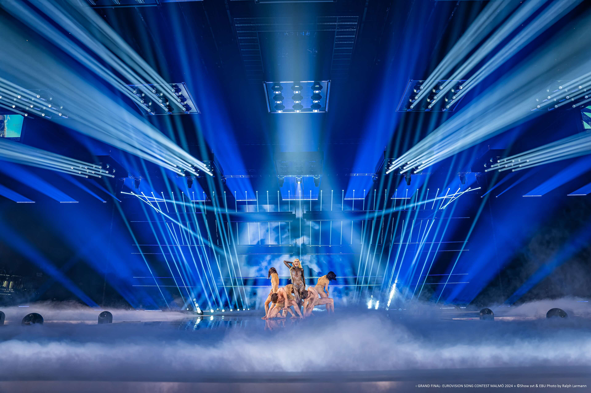
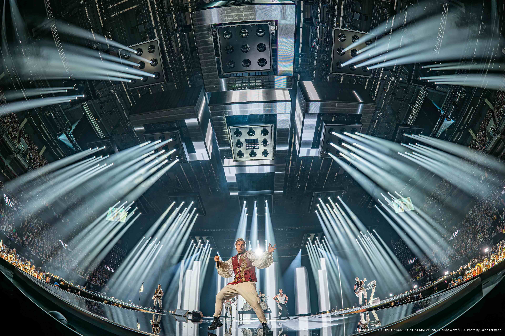

Akce
68. Eurovision Song Contest

Sedmatřicet zemí, sedmatřicet vlastních show — a mezi písničkami necelá minuta na kompletní přestavbu světla.
Údajně největší živý přenos na světě. Designér osvětlení Fredrik Stormby dostal zadání odejít od studiového formátu Eurovize a vytvořit pocit velké koncertní tour. Scéna vznikla bez typických scénických prvků: kruhové uspořádání, kde prostor tvoří výhradně světlo a video — a při každém vystoupení musí být v záběru i publikum.

Dvacet automatizovaných segmentů po devíti kusech v konfiguraci 3×3, další na konstrukcích nad pódiem a okolo tribun. Keylight, beamy, mid-air i kontra světlo v jednom nástroji.
Na výtazích Wahlberg po obvodu scény, ve svislých řadách na 18m věžích a na 32m nosníku před hlavním video panelem — efekt „fotbalové branky".
Silný wash s clonami: umožnil kdykoli bleskově zaclonit sekci tribun a vyhnout se přesvitům do kamery.
PRO MUSIC = výhradní distributor Ayrton pro ČR a SK. Dodavatel osvětlení: Creative Technology Group.
Málo typů svítidel, ale osazených nahusto v dlouhých rovných liniích. Nezávislé řady se kombinovaly s pozicemi automatizovaného rigu — a daly nekonečné množství variací při minimální hmotnosti nad pódiem. Rozhodovala kvalita světla pro kameru, úzký zoom, ořezové nože a cena při velkém počtu.
Show se připravovala záběr po záběru — aby vypadala jako arénový rockový koncert, ne jako studio.